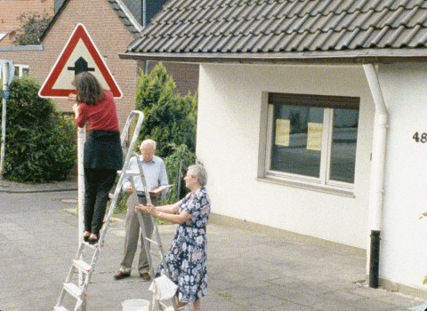
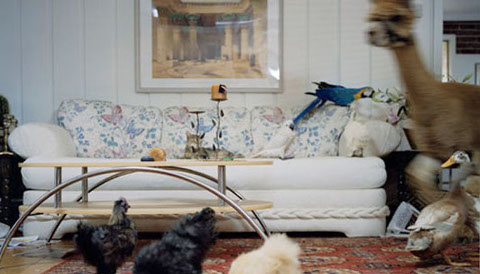

ARTIST IN FOCUS: CORINNA SCHNITT
donnerstag 02.06.2016 19 uhr filmmuseum münchenDie Künstlerin Corinna Schnitt (* 1964 in Duisburg) ist Professorin für Film und Video an der Hochschule für Gestaltung in Braunschweig. Sie eröffnet mit ihren Arbeiten stets einen „Schnittraum“: Ihre Kurzfilme und Videoarbeiten erzählen mittels dokumentarischer Fundstücke absurde Geschichten aus einem allmählich sich verruückenden Alltag, sezieren mit Sprache Gewohnheiten, Banalitäten und Floskeln. Auch wenn sie das Wortspiel mit ihrem Nachnamen liebt, ist ein Kennzeichen des Werks von Corinna Schnitt eine schwebende und wie traumwandelnde Kameraführung, die in gleitenden Plansequenzen Szenerien entfaltet. Corinna Schnitts Werk ist sichtbar beeinflusst von den Traditionen der Avantgarde, zugleich begreift sie den filmischen Raum als installative und dramatische Bühne eines „narrating cinema“. Mit dem Humor und der Absurdität ihrer Geschichten situiert sich Corinna Schnitt auch im Kontext des narrativen Kurzfilms; Themen und Inszenierungen werfen dabei die ungelöste Frage nach einem „weiblichen Erzählen“ auf.
Corinna Schnitt ist neben Christophe Girardet und Matthias Müller, Volker Schreiner, Hito Steyerl, Bjorn Melhus und Jan Verbeek eine der wichtigsten Vertreter*innen der Videokunst in Deutschland, die sich zwischen Kino und Kunst situieren. Ihr Werk wurde in zahlreichen Ausstellungen und Screenings gezeigt und in vielen Publikationen gewürdigt.
UNDERDOX zeigt zur Halbzeit eine Werkschau von Corinna Schnitt, von ihr persönlich als Film Lecture präsentiert.
Website der Künstlerin (deutsch / englisch)
ZWISCHEN VIER UND SECHS – zeit handlungen
Schönen guten Tag
Deutschland 1995
5 min – 16mm – dtOmeU
Putzen als Abwehrzauber gegen die Botschaften, die der Vermieter auf dem Anrufbeantworter hinterlassen hat. Mit seiner Stimme macht er sich mehr zum Eindringling als der vermeintliche Einbrecher, den er beschwört.
Zwischen vier und sechs
Deutschland 1997
6 min – 16mm – dtOmeU
Ritual von Sauberkeit und Ordnung als nostalgische Kindheitserinnerung. Eine Familie geht mit einer Leiter durch den Ort und putzt Verkehrsschilder. Inszenierte Dokumentation allgegenwartiger, erbaulicher Kontroll- und Zwangshandlungen.
Raus aus seinen Kleidern
Deutschland 1999
7 min – 16mm – dtOmeU
Kleiderpflege als Identitätskonstitution, bei der ein Wäschetrockner zur Ursache für das Unbehagen in der Kultur werden kann. Ein alltäglicher Monolog darüber, wie die Dinge zu sein haben, vorgetragen im urbanen Hochhaussetting.
Living a Beautiful Live
Deutschland / USA 2004
13 min – DigiBeta – eOmdtU
Die Zukunftsvorstellungen von kalifornischen Jugendlichen werden einem gut situierten, aber gelangweilten Paar in einem geschmackvollen Haus in den Mund gelegt. Das Klischee wird in dazwischengeschnittenen DEFA-Bildern offensichtlich.
Vollendete Zukunft
Deutschland 2015
9 min – HD – dtOF
Die Zukunft als vollendete, aber unerfüllte Vision des Vergangenen. Auf einem Rathausplatz wird wie auf einer Agora mit Megaphonen die Vergänglichkeit ausgerufen.

VON EINER WELT – raum vermessungen
Das schlafende Mädchen
Deutschland / NL 2001
9 min – 16mm – dtOmeU
Schloss Solitude
Deutschland 2002
10 min – 16mm – dt dubbed
Once Upon a Time (Tierfilm)
Deutschland / USA 2005
25 min – DigiBeta – o. Dialoge
Von einer Welt
Deutschland 2008
10 min – 35mm auf DigiBeta – dtF
Ball spielen
Deutschland /USA 2013
10 min – digital – o. Dialoge